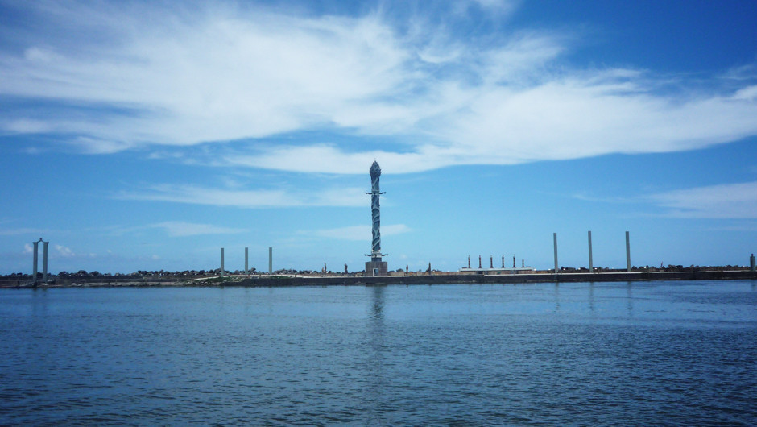
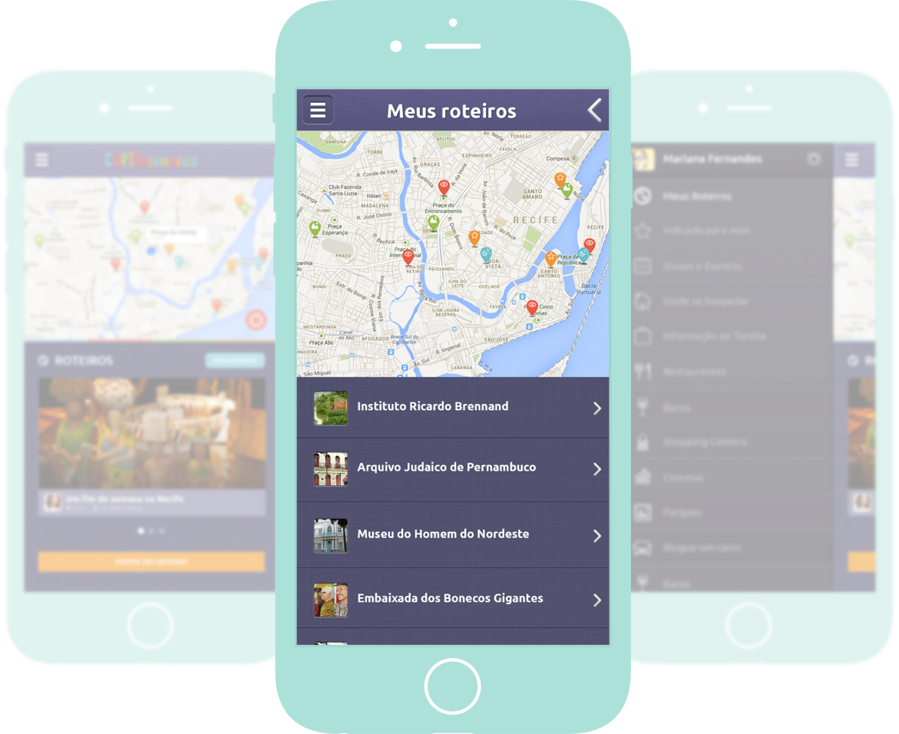
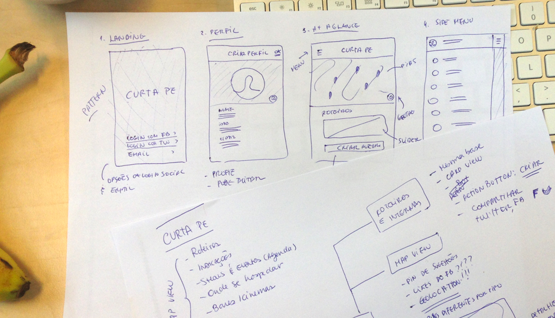
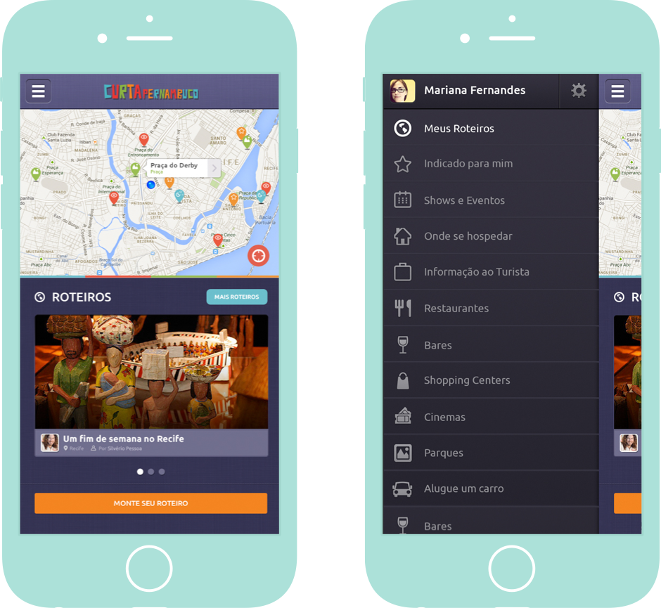

Curta Pernambuco - A guide to your travels through the coastal state in northeast Brazil
ui design | 2013 no longer available on the App StoreThe Norheast of Brazil is known for its white-sand beaches, swaying coconut palms, blue-green water and massive dunes. The state of Pernambuco has authentic spots that still need to be explored. With this idea, the Curta Pernambuco project provides, via a website and printed magazine, tourist information about cultural and gastronomical experiences, itinerary tips, sights, recipes of delicious local food and more, to let people in on all the great stuff that's hidden nearby.
Back in 2013, Curta Pernambuco needed an iOS app for their launch. I designed the app interface and worked closely with the account manager to craft the existing information into a consistent and easy to navigate app.
Pen & paper, Photoshop, Illustrator.
The core of the app is based on actual locations, which are highlighted in a map determined by the user’s geolocation. Looking for a rental car? You got it. What about trying seafood on a restaurant in front of the beach? The app provides the best tips and a list of must-visit places, all listed by categories. A short description of what to do and see on each 'point of interest' is also provided, as well as the options to mark the location as favorite and to share on twitter or facebook.
Users can put together a list of places to visit and consult it on the go, categorizing the saved content - venues, tips, routes, images. In total, I created multiple screens of the app interface, with different interactions and states.
I always try to get a basic concept of how the app will work in terms of the interface before jumping into a more detailed step of the design. The deadline for this project was very tight, so after a few sketches and sync-ups with the Account Manager responsible, I started creating the visual graphics and contents for the app.
I wanted to create something that tourists and enthusiastic locals would love using, so the brand identity was strongly applied to the UI: bold signature color and dark pallete, on which the bright colorful map pins and icons would pop.
